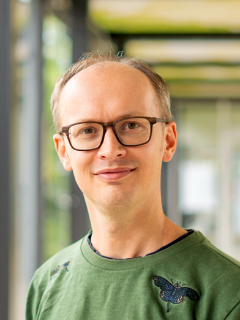
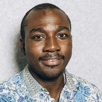
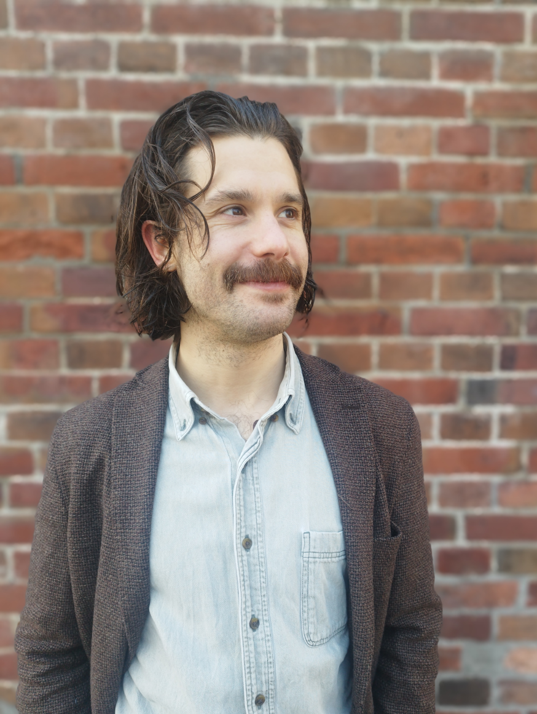
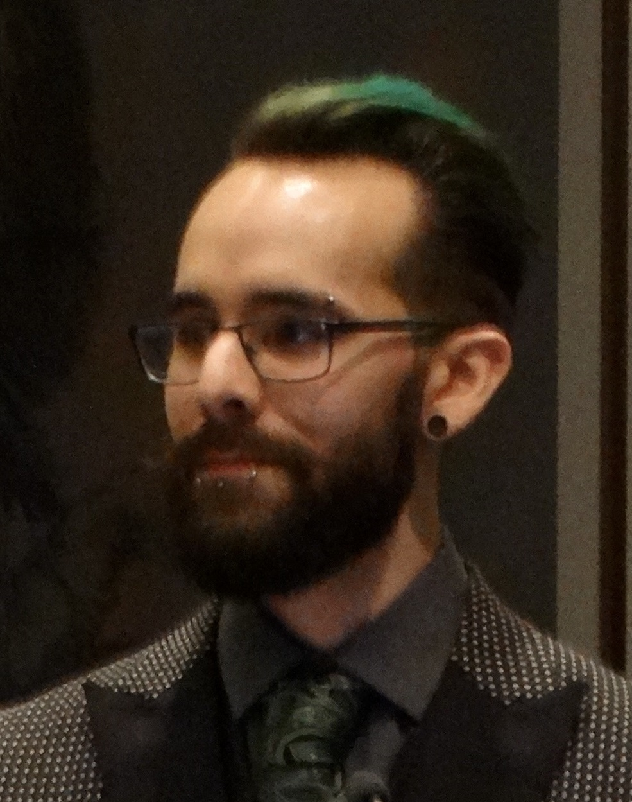

Privacy-preserving audiovisual research data — from anonymization to FAIR sharing. A working day to co-create the workflows the community will actually use.
Video and audio of real people sit at the centre of communication research, qualitative social science, clinical work and humanities archives. The way we collect them outpaces the way we share them.
Two keynotes anchor the day. The middle is co-creation: four parallel sessions where participants either build a new workflow with a domain expert, or audit and revise one they bring with them.
Four workflow drafts from the parallel rooms. A community-built FAQ on video anonymization. A draft training pathway scoped with RDNL. Inputs to the SYNAPSIS policy paper.
09:00 – 17:30 · Plenary sessions in the NU-04C47 Theatre · Final programme, updated 19 September 2026
Four breakout rooms, each run twice (13:00 and 14:00). Every participant attends two.
Every session is a co-creation, not a panel. In each room the group either builds a new workflow with the facilitators, or audits and revises a current one a participant brings with them. The day's deliverable is the four workflow drafts that come out of these rooms.
Alongside the workflow draft, each session brings back a filled grid. Surfaces the parts the workflow alone won't capture.
What this workflow newly enables — and for whom.
Forces pulling against each other (e.g. openness vs. consent).
Things that seem contradictory but are both true (e.g. more masking, less trust).
Concrete blockers — technical, legal, organisational — to ship.
Co-create a metadata extension for masked AV datasets — what fields describe the mask's provenance, what's needed for reuse, where DDI / Dublin Core falls short.
Or revisit an existing FAIR deposit workflow (ODISSEI / DANS) and find where masked AV breaks it.
Co-create an archive-ingest workflow for sensitive humanities AV — using Jetze's working dataset as the case. Consent and rights review → masking → CLARIAH-discoverable deposit.
Or revisit the current CLARIAH ingest pipeline and flag where it assumes "shareable as-is."
Training at the core. The room conceptualises new training pathways for data stewards on hard-to-share AV data — modules, sequencing, handoffs between institutional steward and researcher, what already exists in Essentials 4 Data Support / Beyond Personal Data that can extend.
Or revisit the current data-steward intake when a project hits AV — where does the decision tree break?
Co-create a reference deployment for masking-at-scale across SANE (Tinker & Blind), SURF Research Cloud, and Ponyland HPC — including a path for institutions without local GPU.
Or revisit a pipeline a participant has running and pressure-test where it falls over under throughput or sensitivity.
A small day. Roughly twenty named contributors across keynotes, demo, four parallel rooms, and synthesis. Avatars are placeholders until people send headshots.

Netherlands Institute for Sound & Vision · University of Twente
Pioneer of CLARIAH Media Suite; long-running work on access to broadcast and research AV archives while protecting privacy.

VU Amsterdam · Professor of Sociology · Anthropologist & criminologist
PI of "The Collective Bystander" (ERC) and "De-Escalating" (ORC-NWA); uses video to understand human behaviour in high-stakes public settings. Member of the Scientific Advisory Board of the Dutch Police.
VU Amsterdam · Host
Conversation analyst at VU; SYNAPSIS partner lead at VU Amsterdam.

Radboud University · Co-host
SYNAPSIS project lead; language and interaction research at Radboud.

Radboud University · HPI Potsdam · Demo & Co-creation
SYNAPSIS postdoc; builds the MaskingOPS toolchain and runs Masking School / Lab co-creation formats.
Radboud Humanities Lab · Demo
Engineer behind the MaskAnyone and Masked-Piper tooling; Humanities Lab at Radboud.
ODISSEI
FAIR data and metadata at the Dutch social science infrastructure ODISSEI.
ODISSEI · paired with Angelica
FAIR implementation and community engagement at ODISSEI; writes on licensing for sensitive data.
DANS / CLARIAH
Brings the working humanities dataset for Session B; plus-one facilitator to be nominated.
Nominated by Jetze
4TU.ResearchData · Training Coordinator Research Data Netherlands · paired with Santosh
Training coordinator for Research Data Netherlands project to create a national training and community platform for research data professionals.
TU Delft · Data Steward, Faculty of Electrical Engineering, Mathematics and Computer Science · paired with Dorien
Data steward at TU Delft's Faculty of Electrical Engineering, Mathematics and Computer Science; brings the institutional decision-tree perspective on sensitive research data.
SURF · paired with Ahmad
SURF data infrastructure; SANE secure analysis environment.
SURF · paired with Carsten
SURF research engineer; compute orchestration for SSH and AV pipelines.

Tilburg University · Donders Institute
Multimodal communication researcher; SYNAPSIS pilot lead at Tilburg.

UvA · ILLC
Gesture / kinematics researcher at UvA; SYNAPSIS co-creation lead.
Radboud University, CLST
CLARIN board, Radboud Centre for Language and Speech Technology; chairs Keynote 1.
SYNAPSIS
Day-of facilitation, format intro, synthesis lead.
Radboud University, RDM
Research data management at Radboud; chairs Keynote 2 and co-leads the synthesis that feeds the SYNAPSIS policy paper.
Places are capped at ~50, so register early — it helps us hold a seat for you and shape the parallel rooms around real use cases. The form asks for your affiliation and role, dietary needs, your first and second choice of parallel session, and whether you'll join the borrel.
Can't open Google Forms? RSVP by email instead.
babajide.owoyele@ru.nl
VU Amsterdam main campus, Nieuw Universiteitsgebouw (NU), 4th floor. Plenary sessions are in the NU-04C47 Theatre; the parallel rooms are listed in the programme. Nearest stations: Amsterdam Zuid and De Boelelaan / VU.
A laptop is useful for the demo and parallel rooms. If you have a small AV dataset or a concrete sharing dilemma you want to work on, flag it in the comments field of the registration form.
Lunch, three coffee breaks, and optional drinks are included. The registration form asks about dietary needs.
SYNAPSIS events follow the host institution's code of conduct.
Co-creation produces a living FAQ on Codeberg, openly licensed. Synthesis notes feed the SYNAPSIS policy paper; you'll be credited if you contribute (unless you'd rather not).
Travel is at attendees' own cost.